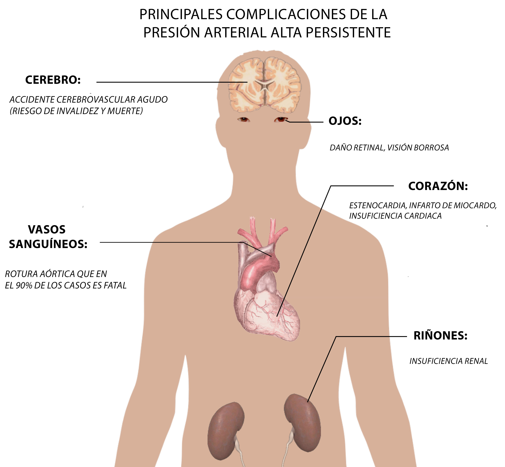
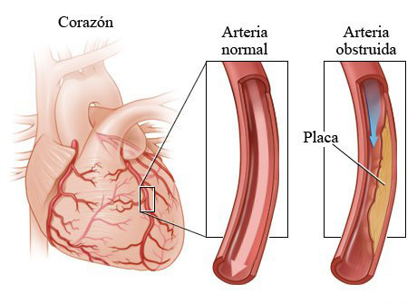
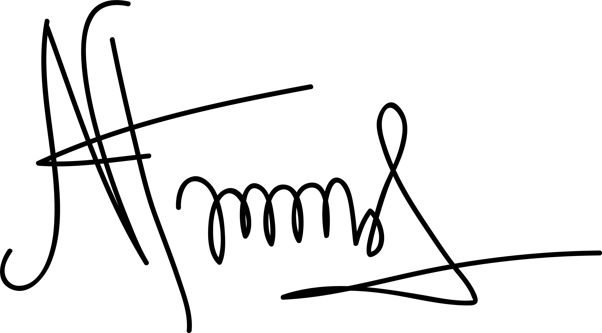
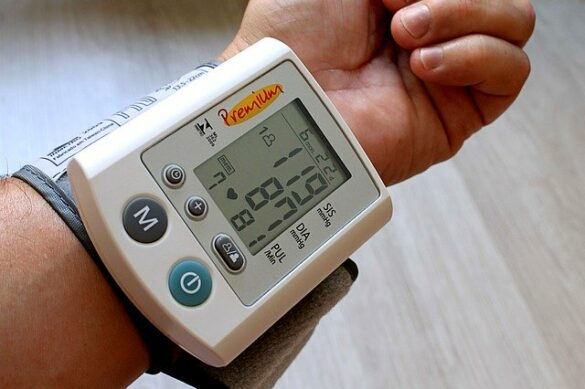

ADIÓS HIPERTENSIÓN: destruimos los mitos que cada día matan a los españoles. ¡Descubra toda la verdad sobre la enfermedad y la mejor manera de normalizar rápidamente la tensión arterial!
Publicado: 22 de noviembre de 2022
Castillo Castillo, S. (). Audiología pediátrica: el arte de armar rompecabezas. Revista De Investigación E Innovación En Ciencias De La Salud, 4(1), 1–3.
Según la Organización Mundial de la Salud, alrededor de 9 millones de personas mueren cada año a causa de alta tensión arterial y mil millones de personas sufren de hipertensión en total. En estos momentos, en España, más de 12 millones de personas son víctimas de esta insidiosa enfermedad, lo que supone casi el 1/4 de toda la población del país. Día tras día, nuestros compatriotas luchan por su vida, pero la hipertensión no perdona a nadie y cobra cada vez más vidas...
El 17 de mayo, Día Mundial de la Hipertensión, hablamos con un cardiólogo experimentado, Alfredo Sáez Benítez. El profesor habló de todas las mentiras y la verdad sobre la hipertensión y, lo que es más importante, qué método de tratamiento le curará a usted PARA SIEMPRE de esta enfermedad insidiosa.
Alfredo Sáez Benítez es un destacado cardiólogo del Centro Médico Internacional con 30 años de experiencia. Ilustre Doctor de España, miembro de la Sociedad Internacional de Cardiología, autor de artículos científicos en el campo de las enfermedades cardiovasculares.
“La hipertensión es una patología que se acompaña de un aumento persistente de la tensión arterial y conlleva un cambio en el funcionamiento de los órganos internos y una violación del bienestar de la persona. La causa principal de la hipertensión es la obstrucción de los vasos sanguíneos por placas de colesterol, sales de calcio y otras sustancias nocivas. Con el paso de los años, hay cada vez menos espacio para la sangre en los vasos, y el corazón tiene que trabajar intensamente para llevar sangre con nutrientes a los tejidos y órganos. Sin embargo, la sangre todavía fluye con gran dificultad y mucho más lentamente. ¿Qué consecuencias? El flujo de sangre se altera y todo nuestro cuerpo sufre de falta de oxígeno y nutrición. El trabajo de todos los órganos se deteriora, y con la progresión de la hipertensión, dejan de funcionar por completo”.
Mito 1: Casi todo el mundo tiene alta tensión arterial, no se muere por eso.
Verdad: La hipertensión arterial es una enfermedad, su síntoma clave es un aumento persistente de la tensión arterial. Las consecuencias de un aumento persistente de la tensión son el daño de las funciones de los órganos vitales: el corazón, los vasos sanguíneos, los ojos, los riñones y el cerebro. Hoy en día, la hipertensión arterial y sus complicaciones en forma de infarto, accidente cerebrovascular, daño renal es una de las principales causas de muerte. Y la tragedia a menudo sucede inesperadamente.

Mito 2: Una persona con alta tensión arterial tiene ojos rojos, dolores de cabeza y mareos; en general, hay síntomas.
Verdad: Una persona que sufre de hipertensión arterial no siempre lo sabe, aunque lleve mucho tiempo viviendo con la tensión muy alta. El estado de salud de una persona así puede permanecer bien durante mucho tiempo; esta es la insidiosidad de la enfermedad. Y cuando se presentan los síntomas, a menudo el tiempo para prevenir la enfermedad ya está perdido.
Otra cosa es que hay una serie de señales a las que debes prestar especial atención. Este es un deterioro repentino de la vista, una disminución de la fuerza o sensibilidad en los brazos o piernas, en uno o dos de forma simétrica o asimétrica, una disminución brusca e inexplicable en la cantidad de orina, dificultad para respirar. Pero estos no son síntomas de hipertensión arterial propiamente dicha, son signos de que la enfermedad ya ha presentado complicaciones.
Mito 3. La tensión normal es diferente para todos: uno se desmaya a 120/80 y otro se siente bien incluso a 180/110.
Verdad: los cardiólogos europeos recomiendan los siguientes indicadores: 140/90 mm Hg. - los indicadores no deben ser más altos que este número. Si los indicadores son más altos, esto ya es un aumento persistente de la tensión arterial y el paciente necesita un tratamiento.
Existe el concepto de “tensión cómoda”, para cada persona estos números son diferentes, para uno es 90/60, para otro es 130/80 mm Hg. Sin embargo, la tensión arterial por encima de 140/90 ya es alta, ya que los mecanismos de daño a los órganos y tejidos (ojos, riñones, corazón, cerebro) se activan en el cuerpo humano. Por lo tanto, no necesita tranquilizarse y posponer una visita al médico cuando la tensión es de 180/110 mm Hg.
Mito 4: La hipertensión arterial es una enfermedad de los ancianos.
Verdad: La hipertensión arterial se está volviendo rápidamente más joven. Hoy en día, hay casos en que se desarrolla hipertensión en personas mayores de 25 años.
¿Por qué es peligroso? Si una persona comenzó a sufrir esta enfermedad a la edad de 30-35 años y no lo sabía y no recibió tratamiento durante los próximos 15 años, entonces, a la edad de jubilación, tendrá insuficiencia cardíaca y tal vez un derrame cerebral. Es decir, en esencia, será una persona discapacitada.
¿Cómo detectar y prevenir la alta tensión arterial a tiempo? Toda persona, a partir de los 25 años, debe medir la tensión arterial al menos una vez cada seis meses y, a partir de los 35 años, debe prevenir y limpiar los vasos sanguíneos por su cuenta.
Mito 5: Las principales causas de la hipertensión arterial son hereditarias.
Verdad: El factor hereditario importa, sin duda. Pero en sí misma, una predisposición hereditaria a la hipertensión arterial no significa que una persona definitivamente se enfermará. Pero cuando otros factores negativos, como fumar, un estilo de vida sedentario, abuso de alcohol, obesidad, desnutrición, se unen a la herencia, entonces el desarrollo de la enfermedad se vuelve casi inevitable.
Otro factor de riesgo es el abuso de sal. Pocas personas saben que incluso sin poner sal en los alimentos a propósito, consumimos sal de mesa tres veces más de la cantidad que necesitamos. La ingesta excesiva de sodio, que se encuentra en la sal de mesa, es uno de los factores de riesgo más poderosos para la hipertensión arterial.
Mito 6: La tensión sube debido a un mal funcionamiento del corazón.
Verdad: No lo es. Hay una razón para el trabajo intensivo del corazón, que posteriormente da lugar a un aumento de la tensión. Se encuentra en el hecho de que los vasos sanguíneos están obstruidos con placas de colesterol, sal de calcio y otras sustancias. La sangre que fluye a través de los vasos para suministrar oxígeno y sustancias útiles a los órganos encuentra un obstáculo en su camino y fluye más lentamente. El corazón ve el problema y trata de restaurar la velocidad de la sangre anterior. Trabaja más intensamente, la sangre fluye a la misma velocidad, pero la tensión aumenta inevitablemente.

Mito 7: El tratamiento de la alta tensión arterial es asunto de un médico.
Verdad: Lo que importa es cuán responsablemente el propio paciente trata el tratamiento. Si el paciente se somete a un tratamiento irregular, no toma los remedios prescritos, entonces incluso los mejores remedios no le ayudarán.
Mito 8: La prevención eficaz de la hipertensión es llevar un estilo de vida saludable.
Verdad: Desafortunadamente, incluso un estilo de vida saludable no es garantía de la ausencia de la hipertensión. Según estudios recientes realizados en la Universidad Autónoma de Madrid, los científicos han descubierto que la limpieza vascular es mucho más importante para prevenir la hipertensión. Los vasos sanguíneos se limpian con la ayuda de preparaciones especiales destinadas a esto. El objetivo es limpiar los vasos de los residuos biológicos acumulados en los vasos sanguíneos.
Se recomienda la prevención a partir de los 35 años. Es a esta edad que se acumula el volumen importante de productos de desecho en los vasos sanguíneos del cuerpo, lo que puede provocar el desarrollo de hipertensión.
Mito 9: La limpieza debe ser prescrita por un médico, todo el proceso debe ser supervisado por un especialista.
Verdad: Solía ser así. Pero con la aparición de remedios eficaces y seguras para limpiar los vasos sanguíneos, esta necesidad ha desaparecido. Ahora cada paciente puede hacer la limpieza por su cuenta. Puede lograr el resultado deseado siguiendo el método de aplicación indicado en las instrucciones.
Esto evita que el paciente tenga que hacer una cita con un médico, perdiendo tiempo y, a menudo, dinero.
Mito 10. Todos los remedios para la prevención contienen componentes químicos. Sin esto, el remedio es ineficaz.
Verdad: Recientemente, se ha introducido en el mercado una preparación hecha de componentes vegetales. No es inferior en efectividad a sus análogos químicos, pero es un remedio más seguro. Este remedio es las gotas Opticor. El remedio es completamente natural, lo que excluye posibilidad de alergias y la presencia de efectos secundarios.
La efectividad del remedio se explica por la habilidad en la selección de hierbas medicinales, su compatibilidad y las proporciones correctas. Los tres ingredientes clave de Opticor son el extracto de kumquat, extracto de hojas de leonuro, extracto de panículas de lúpulo
Extracto de kumquat: reduce el nivel de colesterol "malo" en el organismo. Fortalece las paredes de los vasos sanguíneos, aumenta su elasticidad y reduce la carga sobre el corazón. Tiene un efecto de fortalecimiento general, mejora la inmunidad.
Extracto de hojas de leonuro: Estimula la respiración de las células cerebrales y disminuye el ritmo cardíaco. La quinoa tiene un efecto positivo como agente antiinflamatorio. Afecta el metabolismo de los carbohidratos, reduce el azúcar en la sangre.
Extracto de panículas de lúpulo: tiene un efecto positivo sobre el estado de los sistemas nervioso, endocrino, respiratorio y reproductivo, mejoran la microcirculación sanguínea y previenen eficazmente la formación de coágulos de sangre. Contribuye a la excreción de radionúclidos y sales de metales pesados del organismo.
Solo 1-2 meses de uso regular de las gotas Opticor son suficientes para que el sistema cardiovascular se recupere por completo. Además, durante el primer mes, aproximadamente el 70% de sus vasos sanguíneos serán limpiados. Así lo han confirmado numerosas pruebas realizadas en la Universidad Autónoma de Madrid. Estos estudios se dedicaron a probar la seguridad y la eficacia de este complejo herbal. Opticor pasó todos los controles.
Opticor es una oportunidad para mejorar significativamente la calidad de su vida y olvidarse de dolores de cabeza e hipertensión sin el uso constante de pastillas. Está suficiente pasar un curso de tratamiento con las gotas naturales Opticor. En 1-2 meses, se recuperarán todos los ciclos vitales: la cabeza dejará de doler, desaparecerán la hinchazón, las bolsas debajo de los ojos, el exceso de peso: el cuerpo "resucitará". Inmediatamente sentirá una mejoría en su condición y un aumento de la vitalidad, y lo más importante, se protegerá de una muerte prematura por un ataque al corazón o un derrame cerebral.
Para fines de prevención y para mantener el efecto positivo, use las gotas Opticor cada 3-5 años. Esto ayudará a mantener el resultado obtenido y prevenir el desarrollo de enfermedades cardiovasculares.
¡ATENCIÓN! La hipertensión es peligrosa si no se trata. Pero no se deje llevar por el pánico. No crea en los ridículos rumores y provocaciones que utilizan los médicos sin escrúpulos y los farmacéuticos corruptos para intimidarlo. No le ofrecen a usted una solución real al problema, simplemente le sacan dinero. ¡Ya existe una forma efectiva de tratamiento, y esto es Opticor! El producto es 100% natural y seguro, ¡y al alcance de todos los mexicanos!
Recuerde: su salud está en sus manos. ¡No pierda el tiempo, inicie el tratamiento HOY MISMO!
En el período del 16.05.2022 al hay una oferta especial del fabricante: un 50% de descuento en las gotas Opticor. Para pedir el producto a precio reducido, necesita:
Completar el formulario de pedido oficial a continuación;
Esperar la llamada de un empleado para confirmar la dirección de entrega;
Esperar la entrega del pedido. El mensajero entregará Opticor en 1-3 días a su puerta. Pago al recibir.

ATENCIÓN: ¡hoy es el último día de venta de Opticor con 50% de descuento! ¡No pierda la oportunidad de adquirir el mejor producto para la hipertensión al precio más bajo!
¡Cuide su salud y luego podrá vivir hasta 100 años o más, manteniendo el espirito vivo y el buen humor!
Atentamente, Dr. Alfredo Sáez Benítez.
COMENTARIOS:
Natalia Marín
Leí en mi juventud que los vasos sanguíneos pueden y deben limpiarse de una manera independiente. En verano recogía hierbas y bayas, las secaba y hacía infusiones. Ahora empecé a comprar las gotas Opticor y seguir el curso de tratamiento. El resultado es el mismo
Alejandro Parra
Mi esposa tuvo un microinsulto. Todo salió bien, reaccionaron rápidamente y la llevaron al hospital. Pero el médico nos dijo en el momento del alta que limpiáramos sus vasos sanguíneos, de lo contrario no se puede evitar un segundo derrame cerebral. Desde entonces, hemos estado buscando un medio para la limpieza cuidadosa de los vasos sanguíneos. Creo que Opticor nos conviene, vamos a probarlo
Fernando Río
Pedí un curso de tratamiento. El empleado que me atendió fue bueno. Un chico ingenioso, respondió todas mis preguntas y ayudó a elegir la cantidad necesaria de paquetes para un curso de tratamiento. El envío llegó rápidamente, el embalaje estaba intacto, sin daños. Todavía no puedo hablar sobre el efecto del remedio, recién comencé a usarlo. Pero el servicio del fabricante es de primera clase.
Irene Montes
El precio es una pesadilla. ¿Por qué?
Josefa Olivera
Irene, cuente cuánto da para las preparaciones químicas mensuales (si no semanales) para la hipertensión. Se acumula una suma grande, sobre todo si se tiene en cuenta que tendrá que tomar pastillas toda la vida. Y aquí necesita tomar un curso cada 5 años.
Verónica Aguilar
Irene, ni siquiera se trata de dinero, sino de eficacia. Con las pastillas solo se destruye el hígado, y aquí las gotas son un beneficio para el organismo. Y funcionan rápido, ya en la primera semana hay resultados
Mariano Venegas
Valió su precio. Llevo una semana usando Opticor, pero ya se nota el efecto. Cabeza clara y no hay más mareos.
Carmen Carrizo
Todo eso está bien, ¡pero no confío en los pedidos en línea!
Rafael Revuelta
Carmen, déjelo. Ahora todo se vende en Internet, desde autos hasta tornillos. También hay buenas condiciones, pago solo después de recibir el pedido.
María Agüero
Gracias por hablar de esto. Ya he tenido un derrame cerebral, los médicos no han dicho la causa exacta. Resulta que todo se trata de limpiar. Intentaré limpiar los vasos sanguíneos con Opticor. No quiero terminar en el hospital otra vez.